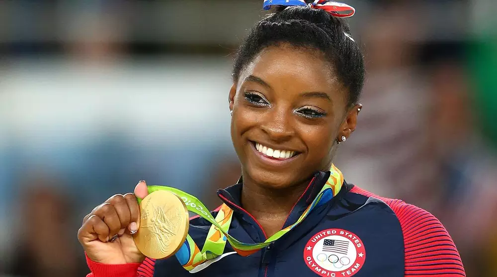

About Biles
Simone Arianne Biles was born on March 14, 1997, in Columbus, Ohio, the third of four siblings. Her birth mother, Shanon Biles, was unable to care for Biles or her other children – Ashley, Tevin, and Adria – due to her drug and alcohol addiction, so the children were in and out of foster care. Biles' birth father, Kelvin Clemons, abandoned his family, struggled with addictions, and was never present in his daughter's life. With the help of his second wife, Nellie Cayetano Biles, Shanon's father Ron (who has two nearly-adult sons, Ron Jr. and Adam), began temporarily caring for Shanon's children in 2000, in the north Houston suburb of Spring, Texas, after finding out his grandchildren got placed into foster care. In 2003, the couple officially adopted the two youngest children, Simone and Adria, and Ron's sister Harriet, adopted the two oldest. Biles holds Belize citizenship through her mother and refers to Belize as being her second home.  Biles and her family practice Catholicism.Simone Arianne Biles (born March 14, 1997)is an American artistic gymnast. Biles is the 2016 Olympic individual all-around, vault and floor gold medalist, and balance-beam bronze medalist. She was part of the gold-medal-winning team dubbed the "Final Five" at the 2016 Summer Olympics in Rio de Janeiro.Biles is a four-time World all-around champion (2013–15, 2018), four-time World floor exercise champion (2013–15, 2018), two-time World balance beam champion (2014, 2015), the 2018 World vault champion, a five-time United States national all-around champion (2013–16, 2018), and a member of the gold-medal-winning American teams at the 2014, 2015, and 2018 World Artistic Gymnastics Championships. Additionally, she is a three-time World silver medalist (2013 and 2014 on vault, 2018 on uneven bars) and a three-time World bronze medalist (2015 on vault, 2013 and 2018 on balance beam). Having won a combined total of twenty-five Olympic and World Championship medals, Biles is the most decorated American gymnast and the third most decorated female gymnast in history.